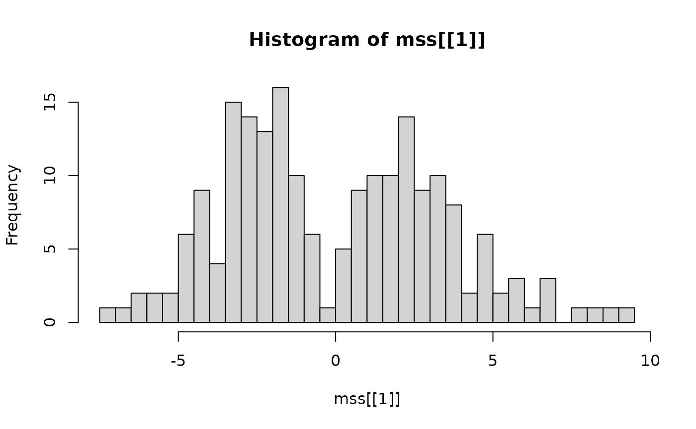

The simulated data simdata_1ct with one cell type (i.e.,
no cluster structure) is generated based on the real single-cell data
DuoClustering2018::sce_full_Zhengmix4eq() with the help of
scDesign3. For more details about generating synthetic
data, please check our paper.
The structure of simdata_1ct is as follows:
str(simdata_1ct)
#> List of 2
#> $ simu_sce:Formal class 'SingleCellExperiment' [package "SingleCellExperiment"] with 9 slots
#> .. ..@ int_elementMetadata:Formal class 'DFrame' [package "S4Vectors"] with 6 slots
#> .. .. .. ..@ rownames : NULL
#> .. .. .. ..@ nrows : int 198
#> .. .. .. ..@ listData :List of 1
#> .. .. .. .. ..$ rowPairs:Formal class 'DFrame' [package "S4Vectors"] with 6 slots
#> .. .. .. .. .. .. ..@ rownames : NULL
#> .. .. .. .. .. .. ..@ nrows : int 198
#> .. .. .. .. .. .. ..@ listData : Named list()
#> .. .. .. .. .. .. ..@ elementType : chr "ANY"
#> .. .. .. .. .. .. ..@ elementMetadata: NULL
#> .. .. .. .. .. .. ..@ metadata : list()
#> .. .. .. ..@ elementType : chr "ANY"
#> .. .. .. ..@ elementMetadata: NULL
#> .. .. .. ..@ metadata : list()
#> .. ..@ int_colData :Formal class 'DFrame' [package "S4Vectors"] with 6 slots
#> .. .. .. ..@ rownames : NULL
#> .. .. .. ..@ nrows : int 998
#> .. .. .. ..@ listData :List of 3
#> .. .. .. .. ..$ reducedDims:Formal class 'DFrame' [package "S4Vectors"] with 6 slots
#> .. .. .. .. .. .. ..@ rownames : NULL
#> .. .. .. .. .. .. ..@ nrows : int 998
#> .. .. .. .. .. .. ..@ listData : Named list()
#> .. .. .. .. .. .. ..@ elementType : chr "ANY"
#> .. .. .. .. .. .. ..@ elementMetadata: NULL
#> .. .. .. .. .. .. ..@ metadata : list()
#> .. .. .. .. ..$ altExps :Formal class 'DFrame' [package "S4Vectors"] with 6 slots
#> .. .. .. .. .. .. ..@ rownames : NULL
#> .. .. .. .. .. .. ..@ nrows : int 998
#> .. .. .. .. .. .. ..@ listData : Named list()
#> .. .. .. .. .. .. ..@ elementType : chr "ANY"
#> .. .. .. .. .. .. ..@ elementMetadata: NULL
#> .. .. .. .. .. .. ..@ metadata : list()
#> .. .. .. .. ..$ colPairs :Formal class 'DFrame' [package "S4Vectors"] with 6 slots
#> .. .. .. .. .. .. ..@ rownames : NULL
#> .. .. .. .. .. .. ..@ nrows : int 998
#> .. .. .. .. .. .. ..@ listData : Named list()
#> .. .. .. .. .. .. ..@ elementType : chr "ANY"
#> .. .. .. .. .. .. ..@ elementMetadata: NULL
#> .. .. .. .. .. .. ..@ metadata : list()
#> .. .. .. ..@ elementType : chr "ANY"
#> .. .. .. ..@ elementMetadata: NULL
#> .. .. .. ..@ metadata : list()
#> .. ..@ int_metadata :List of 1
#> .. .. ..$ version:Classes 'package_version', 'numeric_version' hidden list of 1
#> .. .. .. ..$ : int [1:3] 1 24 0
#> .. ..@ rowRanges :Formal class 'CompressedGRangesList' [package "GenomicRanges"] with 5 slots
#> .. .. .. ..@ unlistData :Formal class 'GRanges' [package "GenomicRanges"] with 7 slots
#> .. .. .. .. .. ..@ seqnames :Formal class 'Rle' [package "S4Vectors"] with 4 slots
#> .. .. .. .. .. .. .. ..@ values : Factor w/ 0 levels:
#> .. .. .. .. .. .. .. ..@ lengths : int(0)
#> .. .. .. .. .. .. .. ..@ elementMetadata: NULL
#> .. .. .. .. .. .. .. ..@ metadata : list()
#> .. .. .. .. .. ..@ ranges :Formal class 'IRanges' [package "IRanges"] with 6 slots
#> .. .. .. .. .. .. .. ..@ start : int(0)
#> .. .. .. .. .. .. .. ..@ width : int(0)
#> .. .. .. .. .. .. .. ..@ NAMES : NULL
#> .. .. .. .. .. .. .. ..@ elementType : chr "ANY"
#> .. .. .. .. .. .. .. ..@ elementMetadata: NULL
#> .. .. .. .. .. .. .. ..@ metadata : list()
#> .. .. .. .. .. ..@ strand :Formal class 'Rle' [package "S4Vectors"] with 4 slots
#> .. .. .. .. .. .. .. ..@ values : Factor w/ 3 levels "+","-","*":
#> .. .. .. .. .. .. .. ..@ lengths : int(0)
#> .. .. .. .. .. .. .. ..@ elementMetadata: NULL
#> .. .. .. .. .. .. .. ..@ metadata : list()
#> .. .. .. .. .. ..@ seqinfo :Formal class 'Seqinfo' [package "GenomeInfoDb"] with 4 slots
#> .. .. .. .. .. .. .. ..@ seqnames : chr(0)
#> .. .. .. .. .. .. .. ..@ seqlengths : int(0)
#> .. .. .. .. .. .. .. ..@ is_circular: logi(0)
#> .. .. .. .. .. .. .. ..@ genome : chr(0)
#> .. .. .. .. .. ..@ elementMetadata:Formal class 'DFrame' [package "S4Vectors"] with 6 slots
#> .. .. .. .. .. .. .. ..@ rownames : NULL
#> .. .. .. .. .. .. .. ..@ nrows : int 0
#> .. .. .. .. .. .. .. ..@ listData : Named list()
#> .. .. .. .. .. .. .. ..@ elementType : chr "ANY"
#> .. .. .. .. .. .. .. ..@ elementMetadata: NULL
#> .. .. .. .. .. .. .. ..@ metadata : list()
#> .. .. .. .. .. ..@ elementType : chr "ANY"
#> .. .. .. .. .. ..@ metadata : list()
#> .. .. .. ..@ elementMetadata:Formal class 'DFrame' [package "S4Vectors"] with 6 slots
#> .. .. .. .. .. ..@ rownames : NULL
#> .. .. .. .. .. ..@ nrows : int 198
#> .. .. .. .. .. ..@ listData : Named list()
#> .. .. .. .. .. ..@ elementType : chr "ANY"
#> .. .. .. .. .. ..@ elementMetadata: NULL
#> .. .. .. .. .. ..@ metadata : list()
#> .. .. .. ..@ elementType : chr "GRanges"
#> .. .. .. ..@ metadata : list()
#> .. .. .. ..@ partitioning :Formal class 'PartitioningByEnd' [package "IRanges"] with 5 slots
#> .. .. .. .. .. ..@ end : int [1:198] 0 0 0 0 0 0 0 0 0 0 ...
#> .. .. .. .. .. ..@ NAMES : chr [1:198] "ENSG00000116251" "ENSG00000142676" "ENSG00000142669" "ENSG00000169442" ...
#> .. .. .. .. .. ..@ elementType : chr "ANY"
#> .. .. .. .. .. ..@ elementMetadata: NULL
#> .. .. .. .. .. ..@ metadata : list()
#> .. ..@ colData :Formal class 'DFrame' [package "S4Vectors"] with 6 slots
#> .. .. .. ..@ rownames : chr [1:998] "naive.cytotoxic10013" "naive.cytotoxic5827" "naive.cytotoxic1319" "naive.cytotoxic4199" ...
#> .. .. .. ..@ nrows : int 998
#> .. .. .. ..@ listData :List of 1
#> .. .. .. .. ..$ cell_type: chr [1:998] "naive.cytotoxic" "naive.cytotoxic" "naive.cytotoxic" "naive.cytotoxic" ...
#> .. .. .. ..@ elementType : chr "ANY"
#> .. .. .. ..@ elementMetadata: NULL
#> .. .. .. ..@ metadata : list()
#> .. ..@ assays :Formal class 'SimpleAssays' [package "SummarizedExperiment"] with 1 slot
#> .. .. .. ..@ data:Formal class 'SimpleList' [package "S4Vectors"] with 4 slots
#> .. .. .. .. .. ..@ listData :List of 2
#> .. .. .. .. .. .. ..$ counts : num [1:198, 1:998] 3 19 2 5 1 6 0 12 1 3 ...
#> .. .. .. .. .. .. .. ..- attr(*, "dimnames")=List of 2
#> .. .. .. .. .. .. .. .. ..$ : chr [1:198] "ENSG00000116251" "ENSG00000142676" "ENSG00000142669" "ENSG00000169442" ...
#> .. .. .. .. .. .. .. .. ..$ : chr [1:998] "naive.cytotoxic10013" "naive.cytotoxic5827" "naive.cytotoxic1319" "naive.cytotoxic4199" ...
#> .. .. .. .. .. .. ..$ logcounts: num [1:198, 1:998] 1.386 2.996 1.099 1.792 0.693 ...
#> .. .. .. .. .. .. .. ..- attr(*, "dimnames")=List of 2
#> .. .. .. .. .. .. .. .. ..$ : chr [1:198] "ENSG00000116251" "ENSG00000142676" "ENSG00000142669" "ENSG00000169442" ...
#> .. .. .. .. .. .. .. .. ..$ : chr [1:998] "naive.cytotoxic10013" "naive.cytotoxic5827" "naive.cytotoxic1319" "naive.cytotoxic4199" ...
#> .. .. .. .. .. ..@ elementType : chr "ANY"
#> .. .. .. .. .. ..@ elementMetadata: NULL
#> .. .. .. .. .. ..@ metadata : list()
#> .. ..@ NAMES : NULL
#> .. ..@ elementMetadata :Formal class 'DFrame' [package "S4Vectors"] with 6 slots
#> .. .. .. ..@ rownames : NULL
#> .. .. .. ..@ nrows : int 198
#> .. .. .. ..@ listData : Named list()
#> .. .. .. ..@ elementType : chr "ANY"
#> .. .. .. ..@ elementMetadata: NULL
#> .. .. .. ..@ metadata : list()
#> .. ..@ metadata : list()
#> $ de_idx : NULLSince there is no cluster structure, so the index of DE genes is empty:
simdata_1ct$de_idx
#> NULLOur proposed multiple data splitting (MDS) does not return significant DE genes:
mss = mds1(simdata_1ct$simu_sce, M = 1,
params1 = list(normalized_method = "sct", pca.whiten = TRUE),
params2 = list(normalized_method = "sct", pca.whiten = TRUE))
#>
#> ===== Multiple Data Splitting: 1 / 1 =====
#>
#> ----- data splitting (1st half) -----
#>
#> ----- data splitting (2nd half) ----
sel = mds2(mss)The mirror statistics are distributed as follows:
hist(mss[[1]], breaks = 50)
However, the naive double-dipping method will return many false positives:
sel.dd = dd(simdata_1ct$simu_sce, params = list(normalized_method = "sct", pca.whiten = TRUE))
#> Warning: The following arguments are not used: norm.method
length(sel.dd)
#> [1] 67Session Info
sessionInfo()
#> R version 4.1.3 (2022-03-10)
#> Platform: x86_64-pc-linux-gnu (64-bit)
#> Running under: Ubuntu 24.04.3 LTS
#>
#> Matrix products: default
#> BLAS: /usr/lib/x86_64-linux-gnu/openblas-pthread/libblas.so.3
#> LAPACK: /usr/lib/x86_64-linux-gnu/openblas-pthread/libopenblasp-r0.3.26.so
#>
#> locale:
#> [1] LC_CTYPE=C.UTF-8 LC_NUMERIC=C LC_TIME=C.UTF-8
#> [4] LC_COLLATE=C.UTF-8 LC_MONETARY=C.UTF-8 LC_MESSAGES=C.UTF-8
#> [7] LC_PAPER=C.UTF-8 LC_NAME=C LC_ADDRESS=C
#> [10] LC_TELEPHONE=C LC_MEASUREMENT=C.UTF-8 LC_IDENTIFICATION=C
#>
#> attached base packages:
#> [1] stats graphics grDevices datasets utils methods base
#>
#> other attached packages:
#> [1] future_1.68.0 SplitClusterTest_0.1.1
#>
#> loaded via a namespace (and not attached):
#> [1] spatstat.univar_3.0-1 spam_2.11-0
#> [3] systemfonts_1.1.0 plyr_1.8.9
#> [5] igraph_2.1.1 lazyeval_0.2.2
#> [7] sp_2.1-4 splines_4.1.3
#> [9] listenv_0.9.1 scattermore_1.2
#> [11] GenomeInfoDb_1.30.1 ggplot2_3.5.1
#> [13] digest_0.6.37 htmltools_0.5.8.1
#> [15] fansi_1.0.6 magrittr_2.0.3
#> [17] tensor_1.5 cluster_2.1.2
#> [19] ROCR_1.0-11 globals_0.18.0
#> [21] matrixStats_1.4.1 pkgdown_2.2.0
#> [23] spatstat.sparse_3.1-0 colorspace_2.1-1
#> [25] ggrepel_0.9.6 textshaping_0.4.0
#> [27] xfun_0.55 dplyr_1.1.4
#> [29] RCurl_1.98-1.16 jsonlite_1.8.9
#> [31] progressr_0.14.0 spatstat.data_3.1-2
#> [33] survival_3.2-13 zoo_1.8-12
#> [35] glue_1.8.0 polyclip_1.10-7
#> [37] gtable_0.3.5 zlibbioc_1.40.0
#> [39] XVector_0.34.0 leiden_0.4.3.1
#> [41] DelayedArray_0.20.0 future.apply_1.20.1
#> [43] SingleCellExperiment_1.16.0 BiocGenerics_0.40.0
#> [45] abind_1.4-8 scales_1.3.0
#> [47] spatstat.random_3.3-2 miniUI_0.1.1.1
#> [49] Rcpp_1.0.13 viridisLite_0.4.2
#> [51] xtable_1.8-4 reticulate_1.39.0
#> [53] dotCall64_1.2 stats4_4.1.3
#> [55] htmlwidgets_1.6.4 httr_1.4.7
#> [57] RColorBrewer_1.1-3 Seurat_4.4.0
#> [59] ica_1.0-3 pkgconfig_2.0.3
#> [61] farver_2.1.2 sass_0.4.9
#> [63] uwot_0.2.2 deldir_2.0-4
#> [65] utf8_1.2.4 tidyselect_1.2.1
#> [67] rlang_1.1.4 reshape2_1.4.4
#> [69] later_1.3.2 munsell_0.5.1
#> [71] tools_4.1.3 cachem_1.1.0
#> [73] cli_3.6.3 generics_0.1.3
#> [75] ggridges_0.5.6 evaluate_1.0.1
#> [77] stringr_1.5.1 fastmap_1.2.0
#> [79] yaml_2.3.10 ragg_1.5.0
#> [81] goftest_1.2-3 knitr_1.51
#> [83] fs_1.6.4 fitdistrplus_1.2-1
#> [85] purrr_1.0.2 RANN_2.6.2
#> [87] pbapply_1.7-4 nlme_3.1-155
#> [89] mime_0.12 compiler_4.1.3
#> [91] plotly_4.10.4 png_0.1-8
#> [93] spatstat.utils_3.1-0 tibble_3.2.1
#> [95] bslib_0.8.0 stringi_1.8.4
#> [97] desc_1.4.3 lattice_0.20-45
#> [99] Matrix_1.6-5 vctrs_0.6.5
#> [101] pillar_1.9.0 lifecycle_1.0.4
#> [103] BiocManager_1.30.25 spatstat.geom_3.3-3
#> [105] lmtest_0.9-40 jquerylib_0.1.4
#> [107] RcppAnnoy_0.0.22 data.table_1.16.2
#> [109] cowplot_1.1.3 bitops_1.0-9
#> [111] irlba_2.3.5.1 httpuv_1.6.15
#> [113] patchwork_1.3.0 GenomicRanges_1.46.1
#> [115] R6_2.5.1 promises_1.3.0
#> [117] renv_1.0.10 KernSmooth_2.23-20
#> [119] gridExtra_2.3 IRanges_2.28.0
#> [121] parallelly_1.46.1 codetools_0.2-18
#> [123] MASS_7.3-55 SummarizedExperiment_1.24.0
#> [125] SeuratObject_5.0.2 sctransform_0.4.1
#> [127] S4Vectors_0.32.4 GenomeInfoDbData_1.2.7
#> [129] parallel_4.1.3 grid_4.1.3
#> [131] tidyr_1.3.1 rmarkdown_2.30
#> [133] MatrixGenerics_1.6.0 Rtsne_0.17
#> [135] spatstat.explore_3.3-3 Biobase_2.54.0
#> [137] shiny_1.9.1